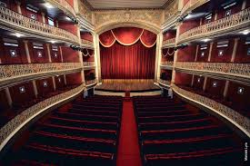

O que é o Marco Zero?
O Marco Zero é o ponto de partida das estradas que se espalham pelo estado de Pernambuco. Localizado na Praça Rio Branco, é um dos principais cartões-postais da cidade, oferecendo uma vista deslumbrante do mar e do Centro Histórico.

História
O Marco Zero foi inaugurado em 1930 e desde então se tornou um símbolo da cidade. A obra foi projetada por Francisco Brennand, um renomado artista local, e representa a rica cultura e história do Recife.
Atrações Próximas
Nas proximidades do Marco Zero, você pode visitar diversos pontos turísticos, como o Teatro de Santa Isabel, o Museu do Frevo e o Centro Cultural Judaico.
Clique aqui - Recife Antigo